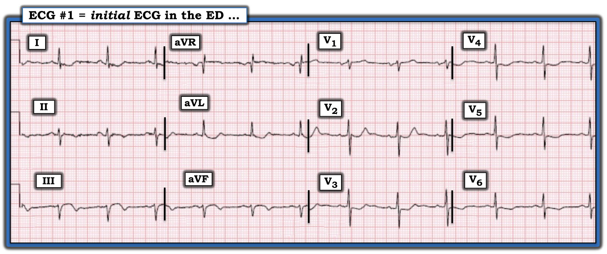
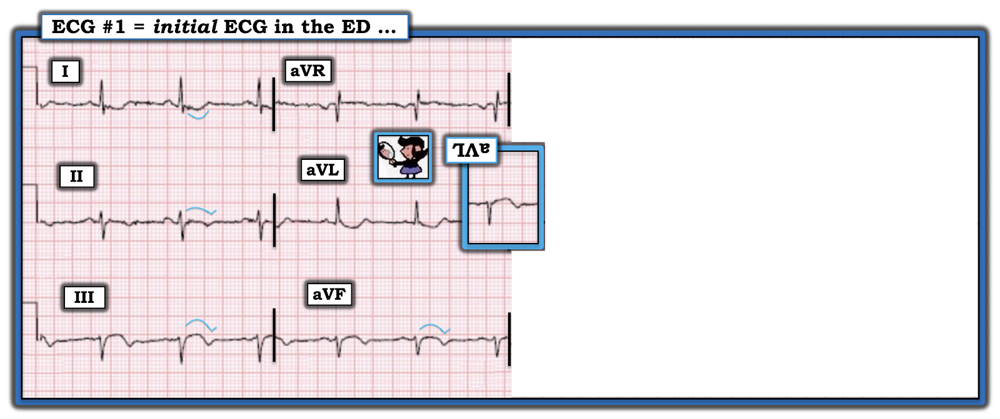
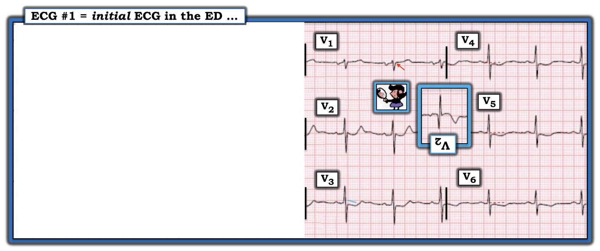
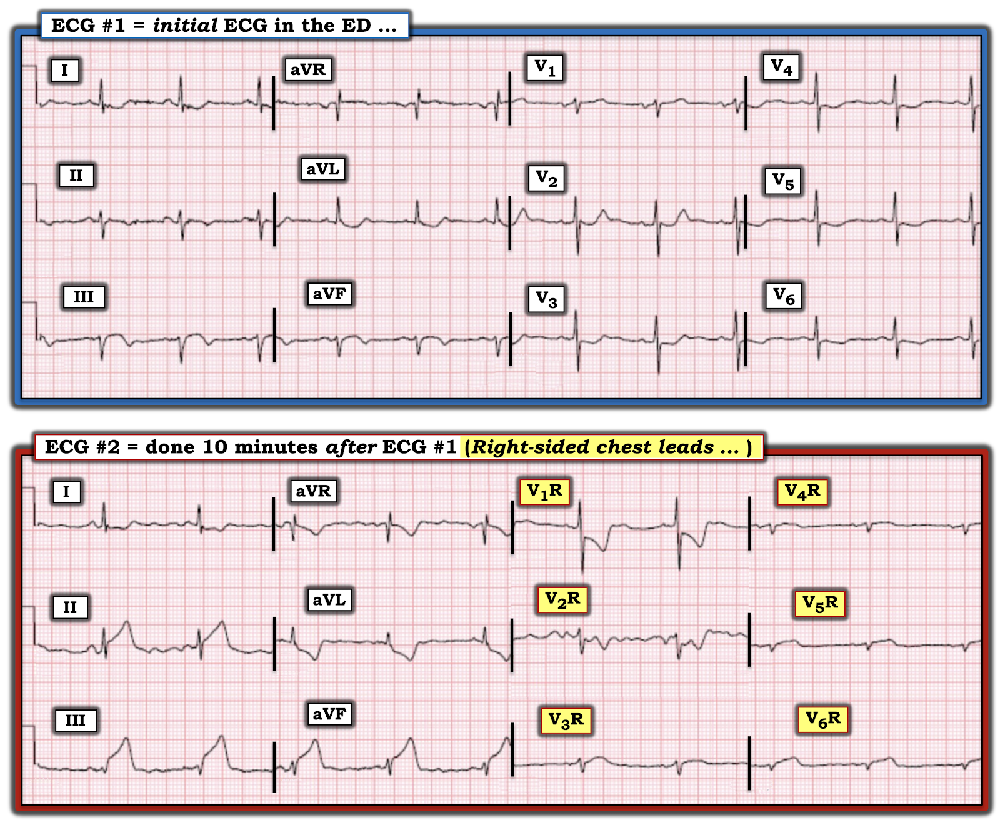
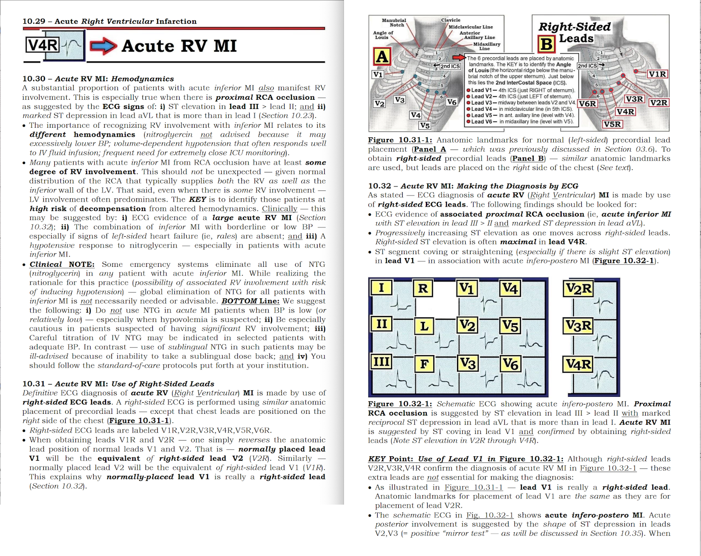

ECG Blog #369 — 10 phút sau ...
Điện tâm đồ ở Hình 1 được ghi từ một người đàn ông khoảng giữa 60 tuổi — đến khám vì đau ngực mới xuất hiện.
- Có nên kích hoạt phòng thông tim (cath lab) không?


SUY NGHĨ CỦA TÔI về điện tâm đồ ban đầu:
Nhịp ở điện tâm đồ #1 — là nhịp xoang, tần số ~70/phút. Mọi khoảng (PR, QRS, QTc) đều bình thường. Không có lớn buồng tim.
- Có trục lệch trái rõ – LAD (Left Axis Deviation) — vì QRS âm ưu thế không chỉ ở chuyển đạo aVF mà cả ở chuyển đạo II. Điều này cho trục mặt phẳng trán ít nhất là -40 độ — phù hợp với blốc phân nhánh trái trước – LAHB (Left Anterior HemiBlock).
Về Thay đổi Q-R-S-T:
- Không có sóng Q (tức là, có một sóng dương khởi đầu rất nhỏ nhưng hiện diện [sóng r] — ở cả chuyển đạo III và aVF).
- Tăng tiến sóng R nhìn chung phù hợp — theo nghĩa vùng chuyển tiếp (nơi sóng R trở nên cao hơn độ sâu của sóng S) xảy ra bình thường giữa chuyển đạo V3 và V4.
- ĐIỂM THEN CHỐT (PEARL) #1: Dù vùng chuyển tiếp ở các chuyển đạo trước tim là phù hợp — hãy lưu ý rằng sóng R ở chuyển đạo V2 tăng chiều cao đột ngột (đã đạt 5 mm ngay ở chuyển đạo V2). Điều này có liên quan đến ca hôm nay (!) — như chúng ta sẽ thấy ngay sau đây.
Về các bất thường ST-T:
- ĐIỂM THEN CHỐT (PEARL) #2: Cách tiết kiệm thời gian nhất là đánh giá bất thường đoạn ST và sóng T cùng nhau — và làm điều đó vào cùng một lúc cho tất cả các chuyển đạo trong một vùng giải phẫu. Ví dụ, ở Hình 1 — "mắt" tôi bị thu hút trước tiên vào các chuyển đạo dưới (II,III,aVF) — mỗi chuyển đạo đều cho thấy đoạn ST dạng vòm (coving), theo sau là sóng T đảo ngược đối xứng (các đường XANH DƯƠNG tôi đã thêm vào những chuyển đạo này ở Hình 2).
- Điểm MẤU CHỐT: Cần lưu ý rằng dù thay đổi ST-T ở các chuyển đạo dưới rõ rệt hơn hẳn ở chuyển đạo III và aVF — chúng cũng hiện diện ở chuyển đạo dưới thứ 3 ( = chuyển đạo II). Khả năng một dấu hiệu ST-T đáng chú ý ở chuyển đạo III và aVF là do biến thể tái cực bình thường sẽ thấp hơn rất nhiều — NẾU hình dạng ST-T tương tự cũng thấy ở chuyển đạo dưới thứ 3 ( = chuyển đạo II).
- ĐIỂM THEN CHỐT (PEARL) #3: Sự xác nhận rằng các dấu hiệu ST-T bất thường ở chuyển đạo dưới vừa mô tả là "thật" (và chỉ điểm một biến cố tim gần đây hoặc cấp tính) — có ngay khi đánh giá chuyển đạo aVL — nơi cho thấy hình ảnh ST-T đối nghịch như soi gương so với hình ảnh ở chuyển đạo III (tức là, không chỉ ST chênh xuống dạng lõm hình muỗng — mà còn phần cuối sóng T dương ở chuyển đạo aVL — như thấy ở Hình 2).
- Thêm bằng chứng cho thấy hình ảnh ở chuyển đạo aVL thể hiện thay đổi ST-T soi gương (reciprocal) thật sự với các dấu hiệu bất thường ở chuyển đạo dưới — đến từ hình dạng ST-T tương tự (dù kém rõ hơn một chút) của đoạn ST-T chênh xuống ở chuyển đạo I.
- XIN NHẤN MẠNH: Mô tả ở trên của tôi được cố ý trình bày theo kiểu "quay chậm". Tổng thời gian bạn cần để đi tới điểm này trong việc đọc điện tâm đồ (tại đó chúng ta đã biết rằng cần kích hoạt phòng thông tim) — nên dưới 10 giây.


Đánh giá thay đổi ST-T ở các chuyển đạo trước tim:
- Có ST chênh xuống ở các chuyển đạo V2-đến-V6 (Xem Hình 3). Chuyển đạo V2 và V3 cho thấy phần cuối sóng T dương. Mức độ thay đổi ST-T là tối đa ở chuyển đạo V2 — với hình chèn ở chuyển đạo này cho thấy nghiệm pháp soi gương ("Mirror" Test) dương tính — mà ở bệnh nhân đến vì đau ngực mới xuất hiện này, là chẩn đoán OMI thành sau cấp — cho đến khi chứng minh được điều ngược lại.
- ĐIỂM THEN CHỐT (PEARL) #4: Thông thường, khi có OMI thành sau cấp — sẽ có ST chênh xuống tối đa ở một hoặc nhiều chuyển đạo trong khoảng V2 đến V4. Hình ảnh ST chênh xuống này đôi khi lan rộng hơn về phía bên (tức là, tới chuyển đạo V5,V6 — như ở Hình 3). Tuy vậy — ít nhất cũng phải có một chút ST chênh xuống ở chuyển đạo V1 khi có OMI thành sau cấp — trừ khi có một điều gì khác đang diễn ra gây ST chênh lên. Việc thay vì ST chênh xuống ở chuyển đạo V1, lại có ST chênh lên nhẹ nhưng có thật (mũi tên ĐỎ ở chuyển đạo này trong Hình 3) — gợi ý mạnh rằng ngoài OMI thành sau cấp — còn có tổn thương RV (thất phải – Right Ventricular) cấp! (Xem thêm về Pearl #4 này — ở Audio Pearl và Hình 5 và 6 trong PHẦN BỔ SUNG bên dưới).
Tổng hợp lại tất cả:
Xét bệnh sử trong ca hôm nay (tức là, một người đàn ông khoảng giữa 60 tuổi đến vì đau ngực mới xuất hiện) — điện tâm đồ ở Hình 1 chẩn đoán OMI dưới-sau cấp mới xảy ra hoặc đang diễn ra.
- Việc mức ST chênh lên ở các chuyển đạo dưới của điện tâm đồ #1 là rất ít (và đi kèm sóng T đảo ngược ấn tượng hơn ở chuyển đạo III và aVF) — gợi ý rằng chúng ta đang thấy sóng T tái tưới máu do động mạch "thủ phạm" tự mở lại.
- Phù hợp với sự hiện diện của sóng T tái tưới máu ở các chuyển đạo dưới — là mức điểm J chênh xuống vừa phải ở chuyển đạo V2-đến-V4. Phần cuối sóng T dương cao một cách đáng ngạc nhiên mà ta thấy ở chuyển đạo V2 gần như chắc chắn thể hiện tái tưới máu ở vùng phân bố thành sau.
- XIN NHẤN MẠNH: Dù không có "đủ" ST chênh lên để thỏa tiêu chuẩn tính theo milimét cho một "STEMI" cấp ở điện tâm đồ #1 — điện tâm đồ ban đầu này hoàn toàn chẩn đoán OMI. Việc mạch bị tắc đã tự mở lại hoàn toàn không hề loại bỏ nguy cơ tắc lại tự phát có thể tái diễn vào bất kỳ lúc nào. Rõ ràng có chỉ định thông tim khẩn!
- ĐIỂM THEN CHỐT (PEARL) #5: Có lẽ chúng ta sẽ hiểu rõ hơn trình tự các biến cố trong ca hôm nay nếu có thêm bệnh sử đối chiếu thời điểm ghi điện tâm đồ #1 — với thời điểm khởi phát triệu chứng — và — với sự hiện diện (cũng như mức độ nặng tương đối) của đau ngực tại thời điểm ghi bản ghi ban đầu ở Hình 1.
- ĐIỂM THEN CHỐT (PEARL) #6: Dấu hiệu ST chênh lên nhẹ nhưng có thật ở chuyển đạo V1 (mũi tên ĐỎ ở chuyển đạo này trong Hình 3) — định vị động mạch "thủ phạm" là RCA (vì LCx không cấp máu cho thất phải).


Ca bệnh hôm nay tiếp diễn:
Khoảng 10 phút sau khi ghi điện tâm đồ #1 — một điện tâm đồ với các chuyển đạo trước tim bên phải được ghi ( = điện tâm đồ #2).
- Để dễ theo dõi, ở Hình 4 — tôi đặt điện tâm đồ ghi lại cạnh bản ghi ban đầu.
CÂU HỎI:
- BẠN đọc điện tâm đồ ghi lại này như thế nào?


SUY NGHĨ CỦA TÔI về các điện tâm đồ ở Hình 4:
- Dù khó đánh giá (do nhiễu ở chuyển đạo V2R — và biên độ QRST rất thấp ở chuyển đạo V3R-đến-V6R) — vẫn có ST chênh lên ở 4 chuyển đạo bên phải sau cùng này. Điều này xác nhận tổn thương RV cấp mà chúng ta đã nghi ngờ mạnh từ ST chênh lên ở chuyển đạo V1 của điện tâm đồ #1.
Lý tưởng nhất là, ngoài các chuyển đạo bên phải — cũng nên ghi lại một điện tâm đồ 12 chuyển đạo đầy đủ với vị trí đặt điện cực bình thường. Thay vào đó — chúng ta hoàn toàn không biết các chuyển đạo V3-đến-V6 đặt ở vị trí bình thường trông như thế nào.
- Lưu ý rằng điện tâm đồ #2 được ghi chỉ 10 phút sau điện tâm đồ #1 — giờ đây chúng ta thấy ST chênh lên mạnh mẽ ở từng chuyển đạo dưới trong điện tâm đồ #2, kèm ST chênh xuống soi gương tương xứng ở chuyển đạo aVL. Ngay cả khi không biết đau ngực của bệnh nhân có tăng lên vào lúc ghi điện tâm đồ #2 hay không — kết luận không thể tránh khỏi là chỉ 10 phút sau khi thấy sóng T tái tưới máu ở các chuyển đạo dưới-sau — giờ đây RCA "thủ phạm" đã tự tắc lại!
- ĐIỂM THEN CHỐT (PEARL) #7: Nên nhớ rằng chuyển đạo V1R tương ứng với chuyển đạo V2 đặt ở vị trí bình thường (và chuyển đạo V2R tương ứng với chuyển đạo V1 đặt ở vị trí bình thường). Vì vậy — chúng ta có thể so sánh chuyển đạo V2 ở điện tâm đồ #1 — với chuyển đạo V1R ở điện tâm đồ #2. Khi làm vậy — rõ ràng là một mức thay đổi ST-T cấp tương đương như thấy ở các chuyển đạo chi — cũng đã xảy ra ở vùng phân bố thành sau (càng củng cố kết luận không thể tránh khỏi là RCA đã tự tắc lại).
KẾT LUẬN CA BỆNH:
Khi thấy điện tâm đồ #2 — thông tim được tiến hành khẩn. RCA được xác nhận là động mạch thủ phạm — và PCI được thực hiện ngay với kết quả tốt. Bệnh ở LAD và LCx không đáng kể.
==================================
Lời cảm ơn: Xin cảm ơn 林柏志 (Đài Loan) đã cung cấp ca bệnh và bản ghi này.
==================================
PHẦN BỔ SUNG (19/3/2023):

ECG Media PEARL #7 (audio 4:50 phút) — ôn lại các dấu hiệu điện tâm đồ của nhồi máu thất phải (RV MI) cấp — cùng các điểm then chốt khác để xác định động mạch "thủ phạm" có khả năng.
CÁC Ví dụ Khác về RV MI cấp:
- Bàn luận về điện tâm đồ 12 chuyển đạo trong Blog #187 —
- Xem Hình 4 trong ECG Blog #80 (thêm về động mạch "thủ phạm" trong bài này) —
- Xem ECG Blog #141 —



===================================
Các bài ECG Blog liên quan đến ca hôm nay:
- ECG Blog #205 — Ôn lại Cách tiếp cận hệ thống của tôi để đọc điện tâm đồ 12 chuyển đạo.
- ECG Blog #193 — minh họa cách dùng nghiệm pháp soi gương (Mirror Test) để giúp nhận ra MI thành sau cấp. Bài này ôn lại những điều cơ bản để dự đoán động mạch "thủ phạm" — cũng như tầm quan trọng của thuật ngữ "OMI" ( = MI do tắc – Occlusion-based MI) như một bước tiến so với mô hình STEMI đã lỗi thời.
- ECG Blog #190 — Ôn lại khái niệm RV MI.
- ECG Blog #285 — một ví dụ khác về MI thành sau cấp (với nghiệm pháp soi gương dương tính Mirror Test).
- ECG Blog #246 — một ví dụ khác về MI thành sau cấp (với nghiệm pháp soi gương dương tính Mirror Test).
- ECG Blog #80 — ôn lại cách dự đoán động mạch "thủ phạm" (và cung cấp một ca khác minh họa nghiệm pháp soi gương để chẩn đoán MI thành sau cấp).
- ECG Blog #184 và ECG Blog #167 — minh họa mối liên hệ đối nghịch như soi gương "kỳ diệu" khi có thiếu máu cục bộ cấp giữa chuyển đạo III và chuyển đạo aVL.
- Bài ngày 21 tháng 9 năm 2020 trên Dr. Smith's ECG Blog — bình luận của tôi (ở cuối trang) nhấn mạnh giá trị của nghiệm pháp soi gương trong chẩn đoán MI thành sau cấp.
- Bài ngày 16 tháng 2 năm 2019 trên Dr. Smith's ECG Blog — bình luận của tôi (ở cuối trang) nhấn mạnh giá trị của nghiệm pháp soi gương trong chẩn đoán MI thành sau cấp.
- ECG Blog #271 — Ôn lại cách xác định đường nền của đoạn ST (kèm bàn luận về thực thể thiếu máu cục bộ dưới nội tâm mạc lan tỏa).
- ECG Blog #266 — Ôn lại cách phân biệt MI thành sau với sóng T de Winter (với phần cuối sóng T dương ở thành trước phản ánh sóng T "tái tưới máu").
- ECG Blog #258 — Cách "định tuổi" một nhồi máu dựa trên điện tâm đồ ban đầu.
- ECG Blog #262 — Ý nghĩa tiềm tàng của điện thế thấp khi có MI cấp.
- ECG Blog #272 — Ý nghĩa của điện thế thấp khi có MI cấp.